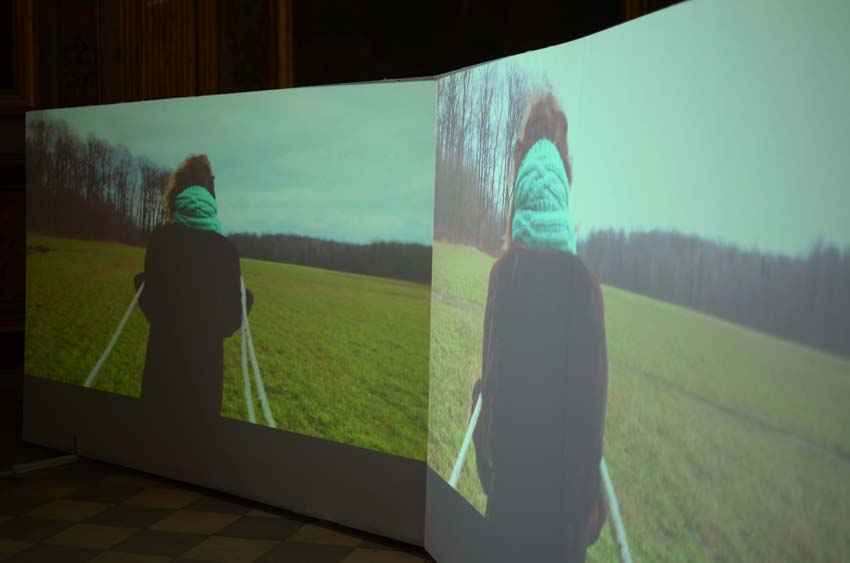

Jessica Arseneau
:: portfolio
Images et projets
Lost Idyll
2015
Vidéo numérique
00:11:55 en boucle
 Installation à la Galerie d'art Louise-et-Reuben-Cohen, Moncton.
Installation à la Galerie d'art Louise-et-Reuben-Cohen, Moncton.
Comprenant alternativement une ou deux images projetées côte à côte, cette installation vidéo nous montre une femme transportant un encombrant échafaudage à travers divers paysages de vastes étendus et une forêt automnale. Entrant dans le champ de l'une des images et sortant de l'autre, cette femme effectue un mouvement sisyphéen, se répétant d'un endroit à un autre dans une mobilité continue.
Structures éphémères composant nos paysages urbains, les échafaudages caractérisent le spectacle du quotidien et sont des gures communes de notre imaginaire collectif. La solitude de cette femme, dans le contexte de ce double espace en friche du champ et de la forêt, renvoie à la dif culté communément ressentie par tous de se projeter dans le futur, par définition indéterminé. Une ambiguïté s'impose entre l'objet qui suggère une xité et cette traversé perpétuelle. Elle rappelle la systématisation d'un quotidien qui s'oppose à ce qui est de plus en plus transitoire et indéfiniment inachevé.



Installation à la Chapelle des Carmélites, durant les Rencontres Traverse Vidéo, Toulouse.
REMERCIEMENTS SPÉCIAUX À
Normand Forget à qui ce projet est dédié
et à
Léandre Bourgeois
Jean-Francois Boisvenue
Martine Brisson
Jérôme Décarie
Éric Delarue
Jean-François Desaulniers
Claude Desbiens
Violaine Gauvreau
Élodie Lançon
Will Niava
Julie Perron
Marc-Yvan S. Poitras
Martin Skorek
Carl Surprenant
Lost Idyll (2015) est distribué par le Groupe Intervention Vidéo (GIV) : givideo.org